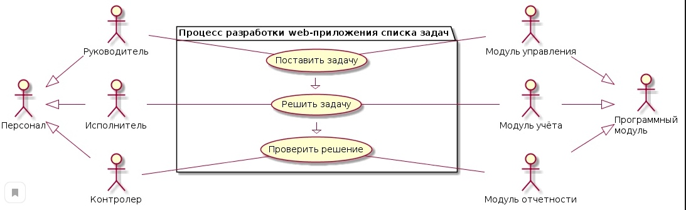
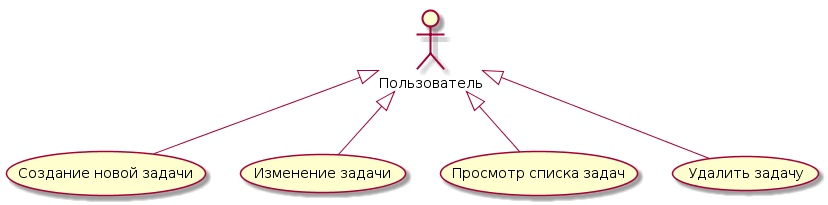
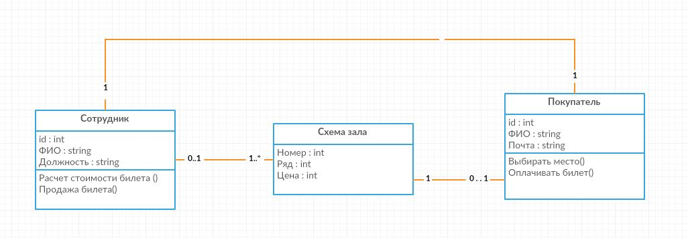

Тупикова Анастасия
Лабораторные работы
Начнем
Лабораторные работы
Начнем
Лабораторная работа №2
Заполнение личной страницы, разработка UML class
Дисциплина "Проектирование ИС"
| Участник | Категория | Цель |
|---|---|---|
| Студент | Основной | Освоить методику построения UML class |
| Куратор | Внешний | Стимулирование освоения методики |
| Лектор | Внешний | Сократить количество ошибок |
| PlantUML | Инструмент | Предоставить средства генерации диаграмм |
| Репозиторий | Инструмент | Предоставить место размещения отчета |
| Участник | Действие | Ожидаемый резульат |
|---|---|---|
| Студент | Изучает принципы построения диаграмм UML class | Знания о структуре и методах построения диаграмм UML class |
| Студент | Формирует диаграмму UML class | Диаграмма на хостинге <имя>.github.io |
| Куратор | Проверяет выполненное задание | Оценка за лабораторную работу |
| Лектор | Анализирует возникшие проблемы | Комментарии и пояснения в ходе лекций |
Несогласованная по смыслу/содержанию/наполненению диаграмма классов
Выбор другого прецедента.
UseCase разработка

UseCase пользования

Отличительной чертой Координаторов является способность заставлять других работать над распределенными целями. В межличностных отношениях они быстро раскрывают индивидуальные наклонности и таланты и мудро их используют для достижения целей команды. Это люди с большим кругозором и опытом, пользующиеся общим уважением команды.
Хорошо себя проявляют, находясь во главе команды людей с различными навыками и характерами. Их девизом может быть «консультация с контролем». Верят, что проблему можно решить мирным путем.
Человек, целью которого является организовать рабочий процесс, следить за сроками и знать как правильно распределить задачи в команде.
Генераторы идей являются инноваторами и изобретателями, могут быть очень креативными. Они сеют зерно и идеи, из которых прорастают большинство разработок и проектов. Обычно предпочитают работать самостоятельно, отделившись от других членов команды, используя свое воображение и часто следуя нетрадиционным путем. Имеют склонность быть интровертами, сильно реагируют как на критику, так и на похвалу. Часто из идеи имеют радикальный характер, и им не хватает практических усилий. Основная функция Генераторов идей – создание новых предложений и решение сложных комплексных проблем. Они очень необходимы на начальных стадиях проектов или когда проект находится под угрозой срыва. Человек, который постоянно что-то меняет в текущем проекте(хочет сделать все идеально и с помощью новых технологий), в итоге приходится все переделывать, но иногда новые идеи приносят значимый результат(оооочень редко)." А давайте..."
Очень серьезные и предусмотрительные люди с врожденным иммунитетом против чрезмерного энтузиазма. Медлительны в принятии решения, предпочитают хорошо все обдумать. Эксперты наиболее подходят для анализа проблем и оценки идей и предложений. Они хорошо умеют взвешивать все «за» и «против» предложенных вариантов.
Интерактивный сайт театра.
Программная реализация функции.
| Бэклог | Принято в работу | Разработка | Внедрение | Завершено |
